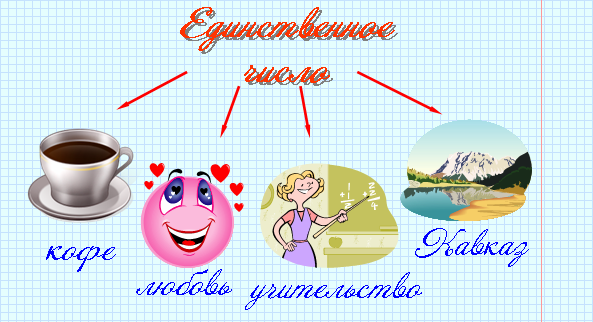
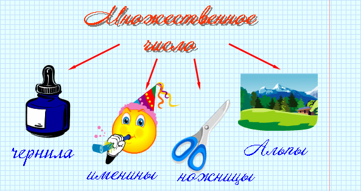

Имя существительное
Число имен существительных
Имена существительные имеют форму единственного или множественного числа. Существительные имеют форму единственного числа, когда речь идет об одном предмете. Например: рука, стол, кот.
Если имеется в виду несколько предметов, существительные употребляются во множественном числе.
Например: руки, столы, коты.
Изменение по числам передается с помощью окончаний.
Например: стол - столы, стул - стулья.
Некоторые существительные имеют только форму единственного или множественного числа.
Только форму единственного числа имеют:
1. Вещественные существительные (молоко, кофе, бензин);
2. Отвлеченные существительные (любовь, добро, синева);
3. Собирательные существительные (учительство, детвора, осинник);
4. Собственные имена существительные (Кавказ, Ишим, Астана).

Только форму множественного числа имеют:
1. Вещественные существительные (чернила, сливки, дрожжи);
2. Отвлеченные существительные (каникулы, именины);
3. Существительные, обозначающие парные предметы (ножницы, брюки, сани);
4. Собственные имена существительные (Альпы, Карпаты).

У существительных, которые имеют только форму множественного числа, не определяется род.